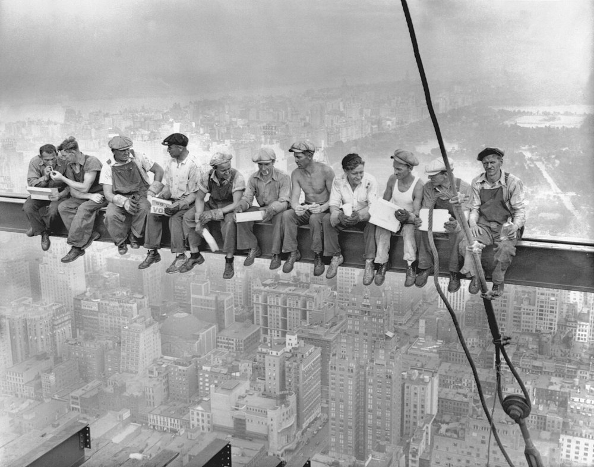

Lunch atop a Skyscraper
Charles C. Ebbets (attribution uncertain) · September 1932 · Photograph, black and white (glass negative)
In copyright. Look and learn: shown for study, not for download.
Acme Newspictures distributed this picture in September 1932, and the New York Herald Tribune ran it in its Sunday supplement on 2 October. The photographer is not certainly known: Charles C. Ebbets, Thomas Kelley and William Leftwich were all present that day. The glass negative has broken into five pieces and is kept in a climate-controlled store in Pennsylvania. The man at the right holding a bottle has been identified as a Slovak worker, Gustáv Popovič; a print with a note to Mariška on the back was found in his estate.